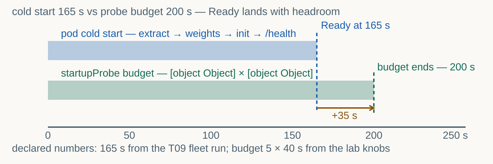
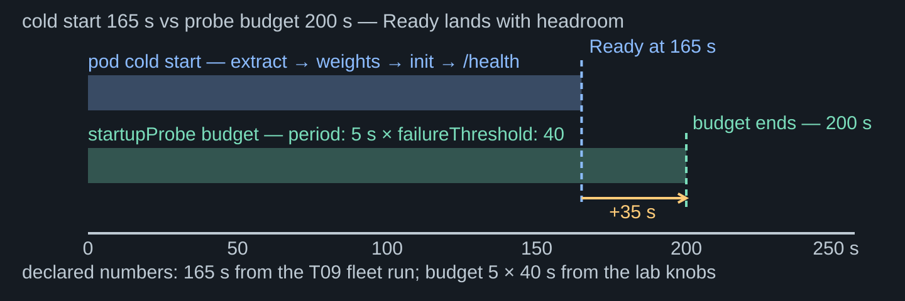
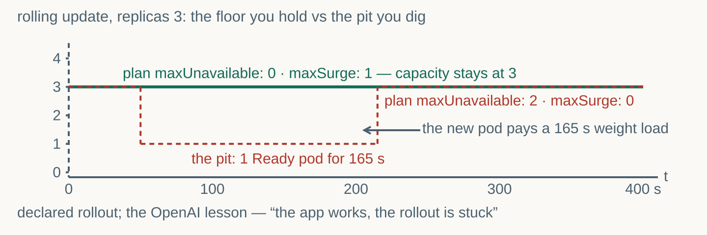

Kubernetes for LLM serving:
pods, probes, releases
The vocabulary that runs the fleet you already have — declared state instead of a by-hand loop.
The fleet you already run
Topic 11 · draftWhat you have
From Topics 08–09: a compose fleet — gateway and llama.cpp engines with mem_limit, restart policy, a hash-chained journal. From Topic 10: shard replicas behind one address. It works — you started it, you restarted it, you rolled it by hand.
What breaks at scale
At three engines the by-hand loop still works. At thirty it does not: who watches liveness at 3 a.m., who rolls the new image engine by engine, who holds capacity while weights load? The answer is not a bigger script — it is a controller that reads declared state.
Desired state, not commands
Topic 11 · draftThe deal
You declare what should exist — a Deployment: replicas 3, memory limits, probes. Controllers reconcile fact to declaration continuously. kubectl apply is a claim about the world, not an action on it; the cluster keeps the claim true.
Why this suits LLM serving
The manifest is data validated by a schema — and the lab's simulators consume the same shapes: requests == limits, probe periods and thresholds. A pod is the smallest unit: the member container from Topic 09, now declared, schedulable and replaceable.
A pod inherits your container's contract
Topic 11 · draftSame physics, new name
From Topic 09: mem_limit 1200m, OOMKilled as exit 137, restart until ready. Kubernetes renames the contract: resources.limits.memory is the same cgroup ceiling; crossing it is OOMKilled — the pod restarts, now under the Deployment's backoff.
What Kubernetes adds
requests — the scheduler's promise: where this pod fits. limits — the runtime ceiling: what it may use. Equal requests and limits put the pod in the Guaranteed class — the next slides turn that into a number and a probe policy.
The pod ledger becomes a manifest
Topic 11 · draft| TP degree p | Memory per pod | Manifest (requests == limits) |
|---|---|---|
| 1 | (16 + 4) / 1 + 1.5 = 21.5 GiB | memory: 21.5Gi, nvidia.com/gpu: 1 |
| 2 | (16 + 4) / 2 + 1.5 = 11.5 GiB | memory: 11.5Gi, nvidia.com/gpu: 2 |
| 4 | (16 + 4) / 4 + 1.5 = 6.5 GiB | memory: 6.5Gi, nvidia.com/gpu: 4 |
The T10 ledger travels unchanged: weights and KV cache shard by p, the fixed 1.5 GiB does not. Tensor-parallel degree = pod size — you already know this arithmetic.
QoS: Guaranteed for a GPU pod
Topic 11 · draftThe three classes
Guaranteed: requests == limits on every container — last to be evicted under node pressure. Burstable: requests < limits — cheaper, evictable. BestEffort: nothing promised — first out.
Why the choice is mechanical
The weights are resident and non-negotiable. Under-promise and the scheduler co-locates a neighbour the pod cannot survive next to — then the node runs hot and someone is evicted. The lab's hidden test rejects requests < limits: Burstable is not a style, it is a different failure mode.
Service: one address over changing pods
Topic 11 · draftPods are cattle
A pod's IP dies with the pod. A Service is the stable address — the striped bar in the lab's manifest figure: it selects the fleet by label and load-balances across Ready pods only. Clients never learn pod addresses.
Why "Ready" is load-bearing
Rolling updates are safe only because the endpoint list tracks readiness: a pod dies — the list shrinks; a pod boots — it joins when Ready. For a pod that spends 165 s just loading weights, "Ready" needs a precise definition — the next two slides make it one.
The pod is not Ready until the weights land
Topic 11 · draft

period 5 s × failureThreshold 40 = 200 s ≥ 165 s, with 35 s of headroom for a slower disk.Three probes, three jobs
Topic 11 · draftThe vocabulary
startupProbe gates the boot — liveness and readiness wait until it passes once. readinessProbe is the traffic gate: fail it and the Service stops routing; the pod lives. livenessProbe is the hang detector: fail it and the pod is killed and restarted.
For an LLM pod specifically
A slow generation must fail readiness, never liveness — killing a healthy but busy engine loses its KV cache and queue. The posttest voice: liveness with a short timeout murders a working pod; readiness throttles traffic instead. Ready only after weights: that is the lab's goes_ready().
Probe budget: one multiplication
Topic 11 · draftRolling update: hold the floor
Topic 11 · draft

maxUnavailable 0, maxSurge 1 adds the replacement before any old pod dies: capacity never leaves 3. The plan maxUnavailable 2 deletes first and serves on one pod while the new one loads weights. The floor is replicas − maxUnavailable.The OpenAI lesson: surge is speed, not capacity
Topic 11 · draftThe reported failure
KubeCon NA 2026, "Rolling Out LLM Inference Engines on Kubernetes": LLM pods are not stateless microservices — they live for hours and pay a long boot. The failure mode: the app keeps serving while the rollout is stuck — every new pod is booting, every old pod is immortal.
The knob that matters
maxSurge buys how fast new pods start arriving; maxUnavailable decides whether capacity dips while they boot. The lab's fix-the-bug exercise hands the students the dip and asks for the floor: replicas − maxUnavailable — not a bigger surge.
Helm: a release is history
Topic 11 · draftValues in, revisions out
A chart is a template; values are the declared numbers — the ledger, the probe budget. Every helm upgrade stamps a new revision: 1 → 2 → 3. helm history lists them; nothing is ever overwritten.
Rollback creates, it does not rewind
helm rollback to revision 1 from history [1, 2, 3] creates revision 4 with the content of revision 1. History stays append-only — the same honesty as the T09 journal. The lab's ReleaseSim pins it: an unknown revision is an error; an upgrade without values inherits the previous ones.
ReleaseSim: the drill
Topic 11 · draftGPU Operator: the dictionary
Topic 11 · draft| Piece | What it does | You write |
|---|---|---|
| driver container | loads the NVIDIA kernel driver on every GPU node | nothing — the Operator's DaemonSet |
| container-toolkit | makes the container runtime GPU-capable | nothing |
| device plugin | advertises nvidia.com/gpu as a schedulable quantity | resources.limits: nvidia.com/gpu: 1 |
| DCGM exporter | GPU metrics for dashboards — the T13 bridge | nothing |
The course trains the pod-side word — nvidia.com/gpu: 1 — and names the installation machinery; a real Operator install needs a cluster, and this course runs on laptops.
Sharing one GPU: slicing, MIG, MPS
Topic 11 · draftThe three words
Time-slicing: the plugin advertises replicas: 4 — four pods share one GPU by time slices, no memory isolation; one OOM hits all. MIG (Ampere+): hardware slices with isolated memory — a fault stays inside its slice. MPS: merged contexts — middle ground on both axes.
Why vocabulary only
No GPUs at hand — the topic says so openly. What transfers from this course is the arithmetic you already own: the ledger decides how many pods a device can honestly host, with or without sharing. DRA (GA in k8s 1.34) is the future allocation API — one sentence, no drill.
Lab 11: the map
Topic 11 · draftTen checkpoints
Quizzes q1–q3 with "why" follow-ups — the checkpoint closes only after the reason. Exercises: pod_resources → probe_budget/goes_ready → fix the rollout floor → capstone class ReleaseSim. Posttest p1–p3 plus the T09 bridge.
The star challenge
Outside the checkpoint count: budget the startup probe — pick period × threshold so the budget covers 165 s and stays ≤ 300 s. The page recomputes your printed result against the declared model and rejects invented numbers; the reference solution stays hidden until you pass.
Honesty: a declared model of a cluster
Topic 11 · draftWhat this is
The lab says it in the intro and the footer: this is a teaching model of a cluster, not your cluster. The controllers are deterministic simulators running in your browser; the manifests carry the same fields a real Deployment would.
Where the numbers come from
Every number is course-inherited and named: 165 s from the T09 fleet run (seminars/runs/2026-11-07-topic09-fleet-mac/README.md), the ledger from T10, the probe arithmetic from the manifest. Nothing is invented as a benchmark — and a real cluster's journal would replace these numbers one for one.
Posttest and the T09 bridge
Topic 11 · draftThe three answers
p1: Guaranteed means requests == limits on every container. p2: a slow generation must fail readiness, never liveness. p3: helm rollback from history [1, 2, 3] to revision 1 creates revision 4. Bridge b1 ← T09: a rolling update replays the restart members — extract, weights, init, health — inside the startup probe of the new pod.
The milestone
A reproducible deployment and a rollback runbook: the manifest numbers from the ledger, the probe budget with its headroom, the rollback command — and the revision number you expect to exist after it. One page, checked against ReleaseSim.
Декларация вместо команд.
Откат — новая ревизия, не переписанная история.
Name the ledger. Budget the boot. Hold the floor.
Roll back to a new revision.